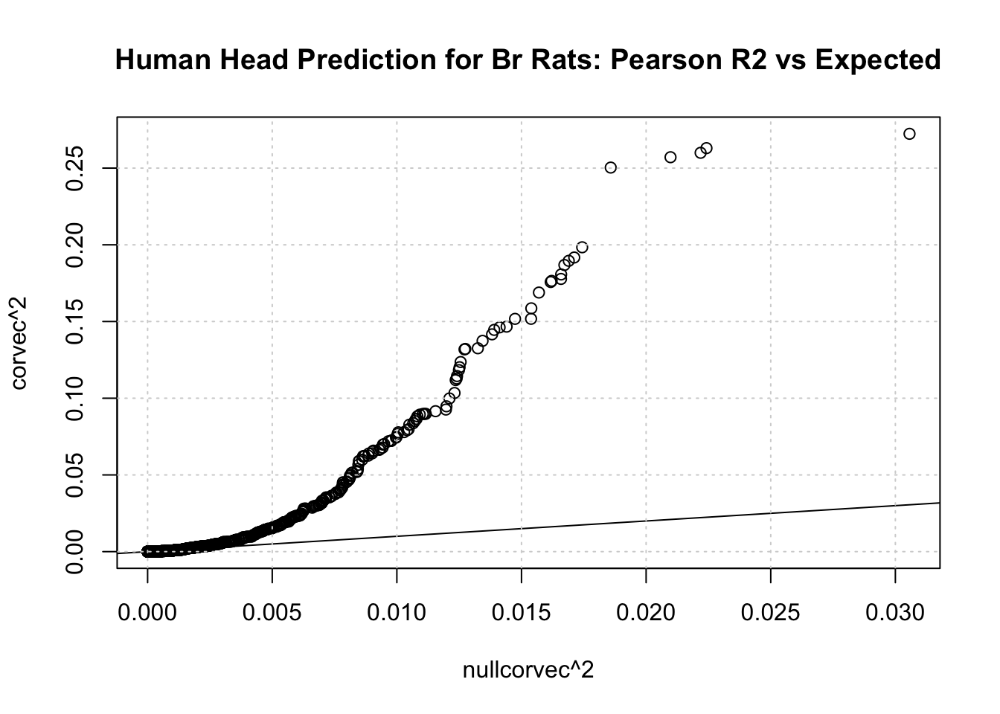
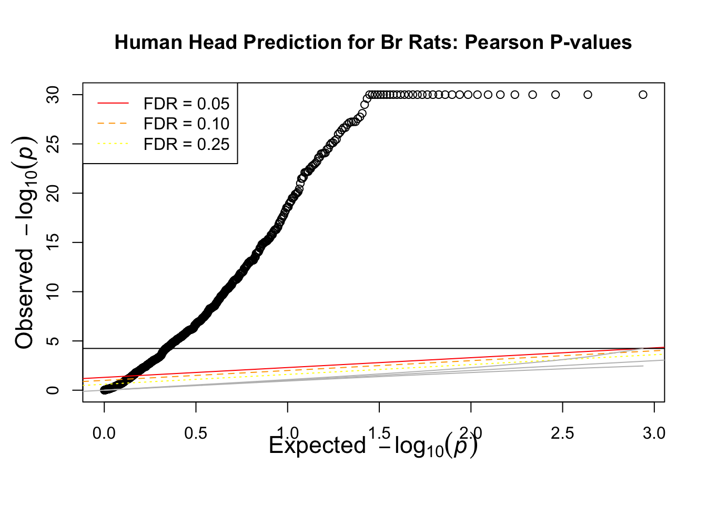
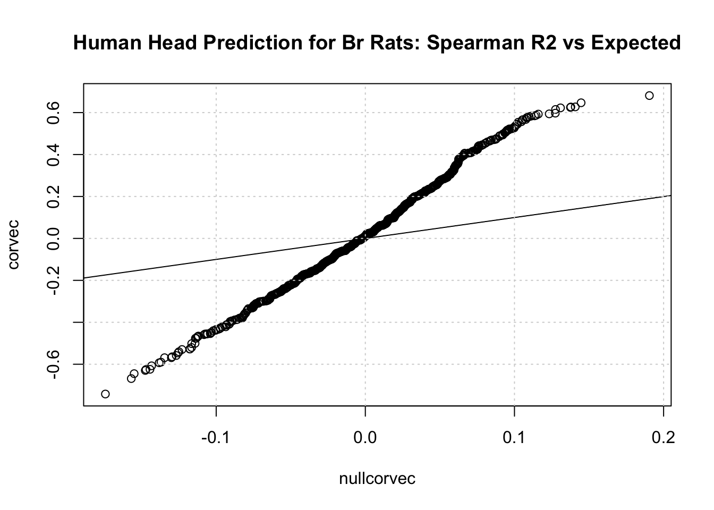
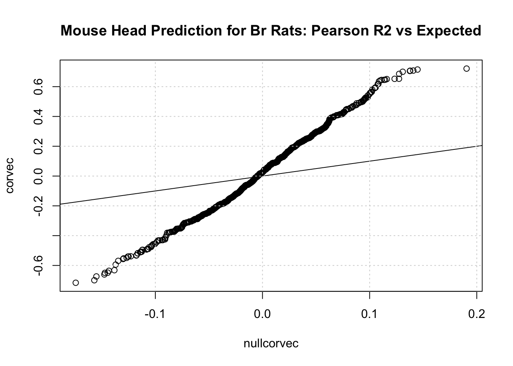
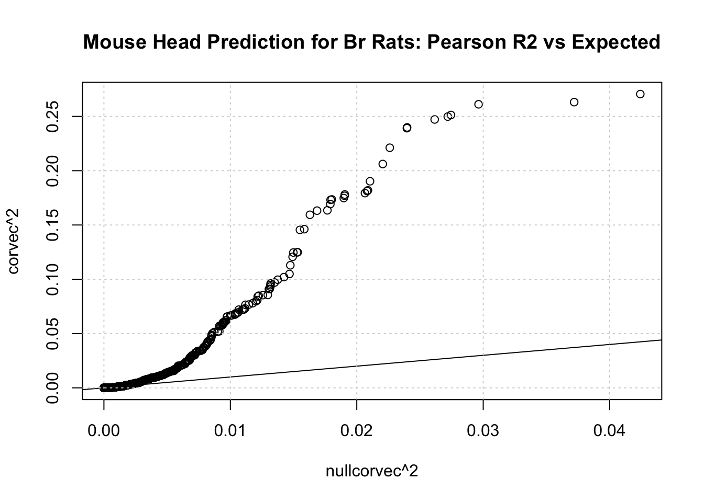
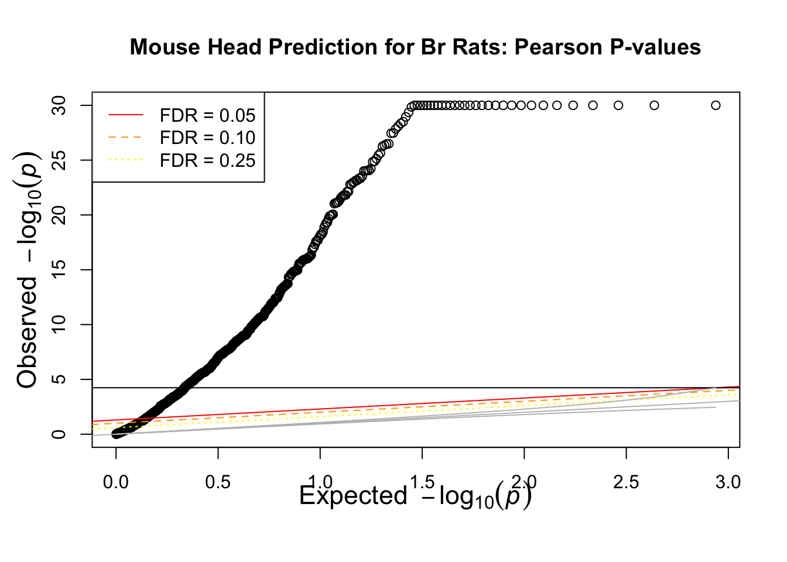
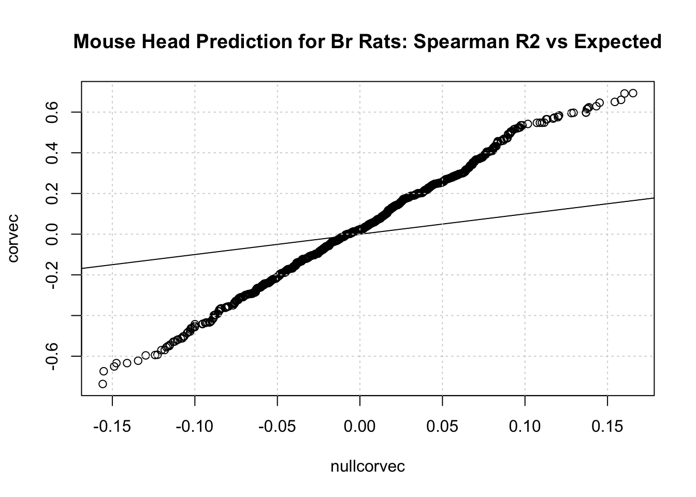
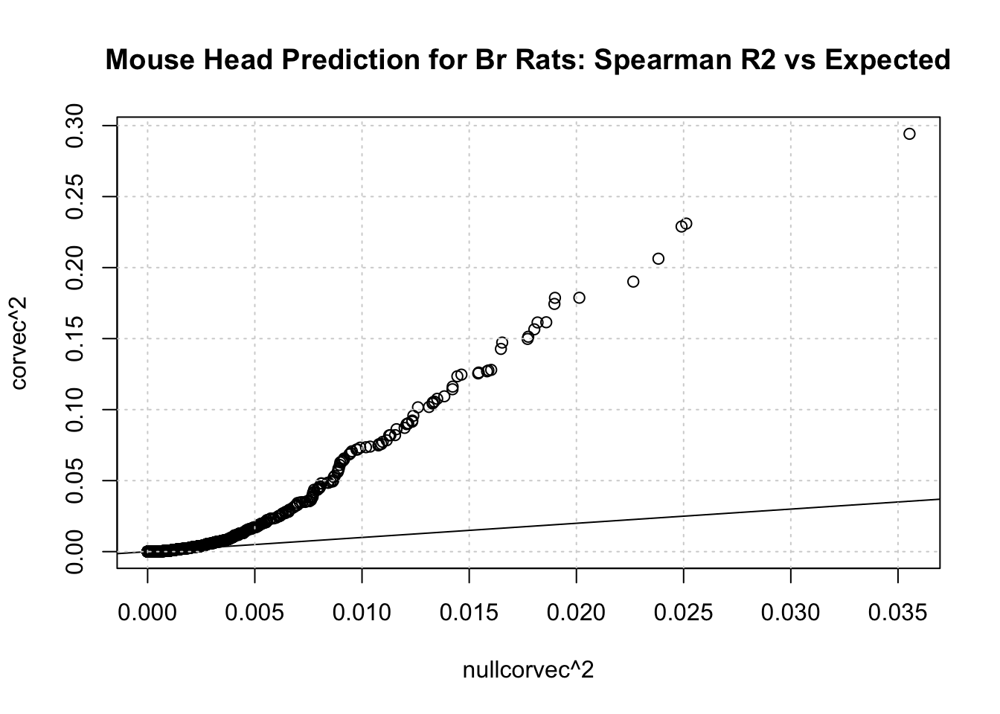

We used Enformer human and mouse head outputs across 340 rats in Br study to predict individual-level gene expression. We recorded pearson and spearman correlations of predicted vs observed expression for each gene. In this post, we evaluate performance of both models against each other as well as PrediXcan.
Enformer Human Head
Plots generated from pearson correlations:
Code
qqR(pearson_corr_human$pearson.r, 340, main="Human Head Prediction for Br Rats: Pearson R2 vs Expected")
Code
qqR2(pearson_corr_human$pearson.r **2, 340, main="Human Head Prediction for Br Rats: Pearson R2 vs Expected")

Code
qqunif(pearson_corr_human$pvalue, main="Human Head Prediction for Br Rats: Pearson P-values")
Warning in qqunif(pearson_corr_human$pvalue, main = "Human Head Prediction for
Br Rats: Pearson P-values"): thresholding p to 1e-30

Plots generated from spearman correlations:
Code
qqR(spearman_corr_human$spearman.r, 340, main="Human Head Prediction for Br Rats: Spearman R2 vs Expected")

Code
qqR2(spearman_corr_human$spearman.r **2, 340, main="Human Head Prediction for Br Rats: Spearman R2 vs Expected")
Code
qqunif(spearman_corr_human$pvalue, main="Human Head Prediction for Br Rats: Spearman P-values")
Warning in qqunif(spearman_corr_human$pvalue, main = "Human Head Prediction for
Br Rats: Spearman P-values"): thresholding p to 1e-30
Enformer Mouse Head
Code
qqR(pearson_corr_mouse$pearson.r, 340, main="Mouse Head Prediction for Br Rats: Pearson R2 vs Expected")

Code
qqR2(pearson_corr_mouse$pearson.r **2, 340, main="Mouse Head Prediction for Br Rats: Pearson R2 vs Expected")

Code
qqunif(pearson_corr_mouse$pvalue, main="Mouse Head Prediction for Br Rats: Pearson P-values")
Warning in qqunif(pearson_corr_mouse$pvalue, main = "Mouse Head Prediction for
Br Rats: Pearson P-values"): thresholding p to 1e-30

Code
qqR(spearman_corr_mouse$spearman.r, 340, main="Mouse Head Prediction for Br Rats: Spearman R2 vs Expected")

Code
qqR2(spearman_corr_mouse$spearman.r **2, 340, main="Mouse Head Prediction for Br Rats: Spearman R2 vs Expected")

Code
qqunif(spearman_corr_mouse$pvalue, main="Mouse Head Prediction for Br Rats: Spearman P-values")
Warning in qqunif(spearman_corr_mouse$pvalue, main = "Mouse Head Prediction for
Br Rats: Spearman P-values"): thresholding p to 1e-30
Scatter Plot with PrediXcan Elastic Net Performance
399 genes out of the 867 genes used in the Enformer runs have prediction performance results in the Br elastic net PrediXcan model. The missing genes were likely filtered out during training because there were no snps found to have effect on their expression.
Code
enet_Br_perf <-read.csv("/Users/sabrinami/Library/CloudStorage/Box-Box/imlab-data/Within-Lab-Sharing/Sabrina-Data/rat_data/misc/highestR2genes.csv")[,c(1,6)]enet_Br_merged <-merge(enet_Br_perf, spearman_corr_human, by.x ="gene", by.y ="row.names")plot(enet_Br_merged$cor, enet_Br_merged$spearman.r, main ="Cross-Individual Correlations for 399 Genes", type ="n", xlab ="PrediXcan", ylab ="Enformer Human Head")points(enet_Br_merged$cor, enet_Br_merged$spearman.r)abline(a=0,b=0)abline(v=0)